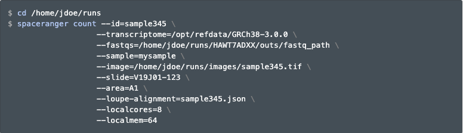
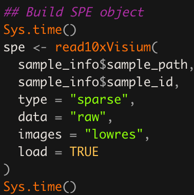

Chapter 7 Space Ranger (Visium)
7.1 Overview
In this chapter, you will learn the basics about the spaceranger count processing pipeline by 10x Genomics for Visium data, and the VistoSeg software you can use for segmenting the images to estimate the number of the cells per spot.
7.2 What is Space Ranger?
Space Ranger is a set of analysis pipelines for processing 10x Genomics Visium sequence data (FASTQ files) with high resolution microscope images of tissue. In short, it maps the transcriptomic reads to the microscope image of the tissue from which the reads were obtained. Space Ranger includes 5 pipelines but we only use one for our work with Visium – this is the spaceranger count pipeline.
You can find more information about the various pipelines on the 10x Genomics website.
7.3 Installing Space Ranger
Installing Space Ranger is fairly simple and can be completed in around 3 steps which can be found in their documentation. Briefly, these are:
- Download and unpack the Space Ranger
.tar.gzfile in any location - Download and unpack any of the reference data
.tar.gzfile in a convenient location - Pre-pend the Space Ranger directory to your
$PATH
If you use the lmod software management utility in your high performance computing environment, you can create a module with commands such as the ones described at:
- JHPCE module source for
spacerangerversion 1.3.0 - JHPCE module config for
spacerangerversion 1.3.0
Thus in the future, you can use spaceranger with commands such as
$ module load spaceranger/1.3.0
Loading LIBD module for spaceranger/1.3.0
Reference files, for use with the '--transcriptome' argument, can be
accessed or downloaded into
/dcl01/ajaffe/data/lab/singleCell/cellranger_reference/.
$ spaceranger --help
spaceranger spaceranger-1.3.0
Process 10x Genomics Spatial Gene Expression data
USAGE:
spaceranger <SUBCOMMAND>
FLAGS:
-h, --help Prints help information
-V, --version Prints version information
SUBCOMMANDS:
count Count gene expression and feature barcoding reads
from a single capture area
aggr Aggregate data from multiple 'spaceranger count'
runs
targeted-compare Analyze targeted enrichment performance by
comparing a targeted sample to its cognate parent
WTA sample (used as input for targeted gene
expression)
targeted-depth Estimate targeted read depth values (mean reads
per spot) for a specified input parent WTA sample
and a target panel CSV file
mkfastq Run Illumina demultiplexer on sample sheets that
contain 10x-specific sample index sets
testrun Execute the 'count' pipeline on a small test
dataset
mat2csv Convert a gene count matrix to CSV format
mkref Prepare a reference for use with 10x analysis
software. Requires a GTF and FASTA
mkgtf Filter a GTF file by attribute prior to creating
a 10x reference
upload Upload analysis logs to 10x Genomics support
sitecheck Collect linux system configuration information
help Prints this message or the help of the given
subcommand(s)7.4 Run spaceranger count
The spaceranger count pipeline requires several inputs (the microscope image and FASTQ files) and performs sequence alignment, tissue detection and alignment using the fiducial frame, and barcode/UMI counting. The most important output is the gene-spot matrix which we combine with other data generated by VistoSeg (see below) into a SpatialExperiment R object for downstream analysis.
A more detailed description of this pipeline can be found here.
Here is an example of the parameters used to run spaceranger count. Note how we are using the gene annotation information provided by 10x Genomics, which is actually the same data they provide for their single cell data processing software called Cell Ranger. So if you have both types of data, you can save some disk space by re-using these gene annotation files. One important input file is the --loupe-alignment file, which is why you’ll need to use Loupe Browser (Visium) first.

Figure 5.1: spaceranger count example usage. Source: 10x Genomics.
7.5 Output files
The spaceranger count pipeline outputs the following files. The ones we use for downstream analysis are the files contained in the raw_features_bc_matrix folder and can be imported into R using the SpatialExperiment::read10xVisium() function.
 for detailed descriptions of each of these files.](images/space_ranger_output.png)
Figure 5.2: spaceranger count output files. See the 10x Genomics spaceranger count documentation for detailed descriptions of each of these files.
Among the output files, we have the two image files:
tissue_lowres_image.png: max 600 pixelstissue_hires_image.png: max 2000 pixels
though you might have a much higher quality image than the hires one that is proportional to these two. The scalefactors_json.json file includes the scaling factors to convert spot coordinates to pixel coordinates from either the lowres or highres image. The spot coordinates information is stored in the tissue_positions_list.csv text file. In addition, you might be interested in the metrics_summary.csv file 1 which includes the metrics displayed in the interactive website web_summary.html. While it is nice that spaceranger count provides files in the filtered_feature_bc_matrix directory with the data filtered to the spots overlapping tissue, as determined by your Loupe Browser (Visium) alignment file, we recommend using the raw_feature_bc_matrix data. Doing so will enable you to inspect the data in spots that theoretically don’t overlap your tissue. Then later on, you can easily filter out those spots when using SpatialExperiment.
If you are interested in accessing some spaceranger count output files, 10x Genomics provides several public datasets that you can use. You can also access the spatialLIBD data from this collection of links Kristen R. Maynard et al. (2021).
7.6 Web summary .html file
The web summary web_summary.html is the first file we look at after Space Ranger is done running because it tells us if the run was successful. It provides general quality control statistics and visualizations. These include clustering results using k-means and graph-based clustering methods visualized on reduced dimensions such as t-SNE and UMAP. One metric that you might want to check is the number of reads per spot overlapping tissue, since according to 10x Genomics, you should target 50,000 mean reads per spot. If you are too low, the median number of genes per spot will suffer and you might need to consider sequencing your cDNA library a bit more.

Figure 5.3: Basic summary portion of the web_summary.html file.
The .cloupe file is also useful for checking the quality of the data. There is more information on this file in the Loupe Browser (Visium) chapter of this book.
7.7 Import outputs into R
We use the SpatialExperiment package to store the data from Space Ranger and VistoSeg (see below) in one convenient object (spe). Below is an example of the code we use to build the spe object.

Figure 5.4: Example SpatialExperiment::read10xVisium() function call. This example will load the data from multiple Visium tissue sections since sample_info$sample_path and sample_info$sample_id are vectors of length greater than one. This can be quite useful for downstream analyses where you want to perform quality control, dimension reduction, clustering, etc across all Visium tissue sections instead of one tissue section at a time.
7.8 VistoSeg for quantifying cells per spot
As was explained earlier in What is VistoSeg?, VistoSeg is a MATLAB pipeline that can be used to estimate the number of cells per spot, which can used for downstream analyses Tippani et al. (2021). It is ideal to first segment the bright field images as described in the Image segmentation (Visium) chapter. VistoSeg can also be used prior to running Loupe as it can help create high resolution images for each Visium tissue section. In particular, VistoSeg provides a graphical user interface (GUI) that can be be used for counting the number of cells or nuclei in the Visium spots of a given tissue capture area. This is described in detail in the VistoSeg documentation website chapter 4.
.](http://research.libd.org/VistoSeg/images/zoom%20in%202.png)
Figure 5.5: A screenshot of the spotspotcheck GUI from VistoSeg that can be used for counting the number of cells or nuclei per Visium spot. Source: VistoSeg.
The spotspotcheck GUI, will allow the user to visually inspect the nuclei segmentations along with generating nuclei counts per Visium spot for each capture area. The countNuclei MATLAB function is the command line version for spotspotcheck which only extracts the number of cells/nuclei per Visium spot without any visualization. The output is saved in a spreadsheet file (tissue_spot_counts.csv) that contains one row per Visium spot barcode and a column with the estimated number of cells per spot. The data for nuclei counts for the tissue per Visium spot can then be incorporated with the outputs of Space Ranger by being stored in the SpatialExperiment object or used for downstream analysis such as in Kristen R. Maynard et al. (2021).
For more information about VistoSeg please see its documentation website.
7.9 Wrapping up
By now you are familiar with how to use Loupe to align your images with the Visium fiducial frame, how to run spaceranger count to process the gene expression data, and how VistoSeg can help you with creating the images for Loupe as well as estimating the number of spots per cell. The next chapters will walk you through several of the analysis steps you can do with R and Bioconductor.